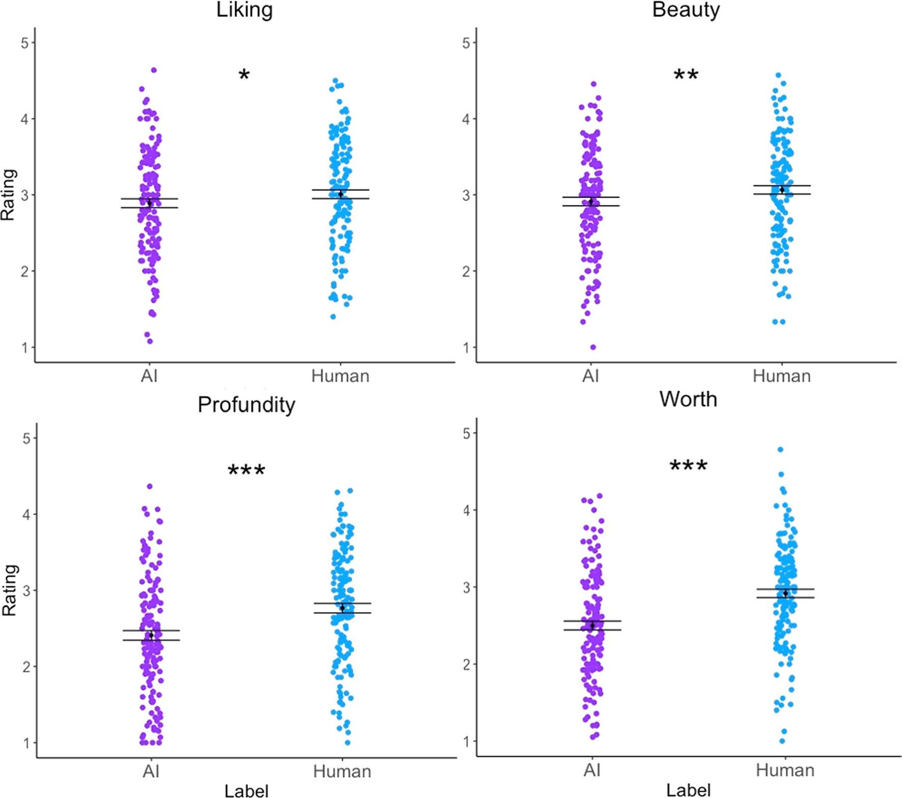

Portfolio
CC4 · Replication and improvement
Creator labels and preferences
1. Published original

Bellaiche et al. (2023), Study 1, Figure 2. CC BY 4.0. AI-Scholar coverage · Original study · Source and method record
3. Revised comparison
Same participant-weighted means and ±1 SEM, on the full 1–5 rating scale. Explicit creator-label wording; shared axis, direct values and redundant point shapes. Chart JSON · Summary data · Study data
Improvement
Beyond compactness, the revision makes the within-class difference between AI and human works far more apparent and directly comparable.
CC3 · Policy debate
Affordable AI access
Policy topic · AI Access
The market is driving costs of inference down dramatically over time. Regulation will have to reckon with far more than a chokepoint of major players.
Cost at a fixed GPQA score
Chart JSON · Data · Epoch source
GPQA · USD/question · Log scale · Retrospective source prices by model release date, not historical API prices. Snapshot: 9 October 2026. Method and provenance
Consumer hardware and frontier performance
Chart JSON · Data · Epoch source
Record benchmark scores · Article snapshot: 15 August 2025; retrieved 15 October 2026. Consumer selection follows Epoch’s hardware criteria. Method and provenance
Findings
Models on consumer hardware are right behind the frontier by approximately one year. Meanwhile costs of inference are rapidly falling, on a log scale no less!
Week 2
AI task-completion horizons
METR Horizon v1.1 · Model release date and human task duration
Choose 50% or 80% predicted success. Bars show published uncertainty bounds. Triangles flag estimates above the source’s 16-hour measurement limit. Task duration refers to human completion times. Snapshot retrieved 9 October 2026; source page last updated 8 September 2026 and no longer actively updated.
Language-model training compute
Epoch AI · Publication date and training-compute estimates
Language-domain records published from 2017 to 9 October 2026 with positive compute estimates; missing estimates excluded. Filter by the source’s confidence labels. Training compute is measured in FLOPs, not model capability. Data: Epoch AI, CC BY. Snapshot retrieved 9 October 2026; source updated 8 October 2026.
Week 1
Embedded Data Lab chart
Existing course example
Embedded GDP per capita chart
Existing World Bank example